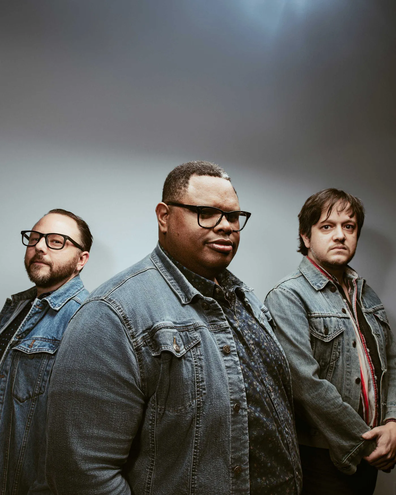

“Comes out of the gate with all cylinders firing.”
The Amp
“A retro curve of rock ’n’ roll with a modern-day twist.”
Americana Highways
“Loud, gripping, lean, serving it up raw at every turn.”
Rock & Blues Muse
“This trio gets after it.”
The Alternate Root

The trio
Guitar, drums, Hammond B3
The trio debuted at a sold-out Kessler, opening for Alejandro Escovedo. Before that: The 40 Acre Mule and Goodnight & Good Luck (State Fair Records, 2019).
J. Isaiah Evans Guitar · songs
Spud Crowley Drums
Matthew Vasquez Keys · Hammond B3
Booking & press
Put the Tweed on your stage
Booking inquiries go to the band. Press goes to Pati DeVries at Devious Planet Media.